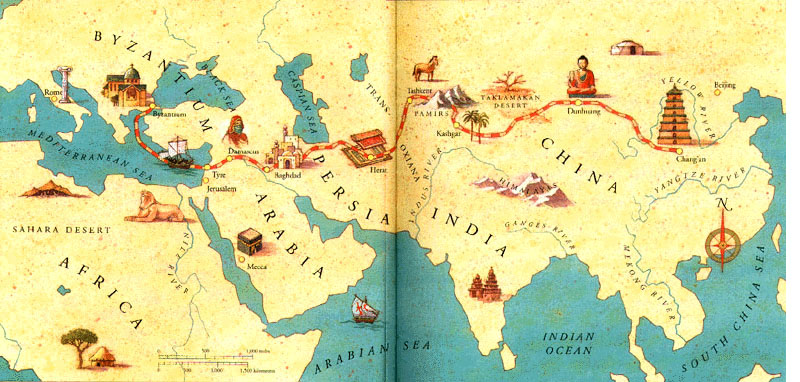
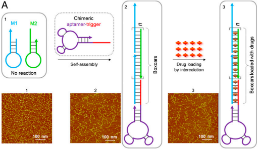
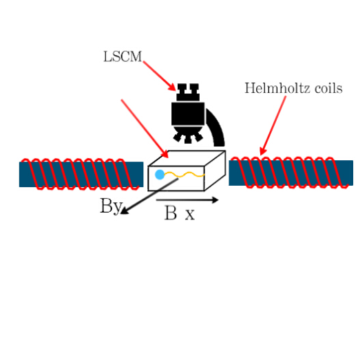

-
HOME
PROJECT
MATERIALS&METHOD
RESULT
FUTURE
TEAM
Since the second century BC, there had been a series of transaction and cultural expedition in the Asian continent. (Now known as the Silk Road) It starts in China, winding through India, Persia, Arabia, and finally arrives at Mediterranean Europe, connects the West and East by engaging a massive of population, which has a significant impact on the lives of people at that time.
Considering the magnificent achievement they did, it encourages us to go further in the modern medicine which also needs an efficient treatment intensively. Given that the two main reasons leading to their success (one is the technology and the other is science), it inspires us to create a similar transportation system in creatures, which bases on the advanced nanotechnology and the precise driving system. And we call it the Nano-ship.
It has three basic characters. Firstly, Loading Capacity; Second, Accuracy; Third, Navigation. To ensure that our Nano-ship has first two functions, it should be specially modified to bind cargoes. For the 3rd function, there should be a part which is like sails on the ship to realize the goal to drive our Nano-ship, and we need controllable strong power to drive the Nano-ship. So we adopt magnetic force as driving force of our Nano-ship.
In our project, for our ultimate purpose—to synthesize our Nano-ship, we need to prepare nanotube, magnetic nanoparticle and gold nanoparticle in the meantime then connect them together. After that, what we need to do is just test. Here is the specific steps
For the next step, we need to load drug or some other substance so that we can verify its recognition and damage to cancer cells. Besides, our Nano-ship can be modified with fluorescein so that we can view its movement to target.
3D modle of the Nano-ship
The final structure of our “Nano-ship” contains a flagellum-like magnetic nanoparticles tail and a gold nanoparticle head. The main body of the tail is a 398×6nm DNA origami tube which stretches out several single-stranded DNA to link Fe3O4 magnetic nanoparticles ( MNPs D=10nm ) and gold nanoparticle(AuNP) head ( D=30nm ). The MNPs and AuNPs are coated with specific oligonucleotide probes, which can link to DNA origami tube. Previous work has shown the possibility of constructing this kind structure .In order to make this structure more stable and controllable, we use DNA origami tube binding sites to control it.
Our Nano-ship is equipped with a strong engine and has the function to recognize cancer cells, meanwhile other substances which are carried by our Nano-ship also have a lethel effect to cancer cells.
We use CADnano for our DNA origami design, CANdo to test our origami structure and we use the ClustalW2 _ EMBL-EBI to test the possibility of combining staple strand. Supporting information “test result”. The size of DNA origami tube is 398nm (6 helixes) in length and 6 nm in diameter. Previous research has shown that the structure of three single-stranded DNA sticking out at each site binding is stabled . Accordingly, at one end of our DNA origami tube, we designed three single-stranded ssDNA which links modified gold nanoparticles, and there are eighteen magnetic nanoparticles binding site in both sides of DNA tube, and three ssDNA strands stretching out at each site. Meanwhile, there are four different types of ssDNA which are designed for four different magnetic nanoparticle binding sites. With a self-assembled reaction, M13mp18 phage ssDNA and 284 staples can be used to synthesis DNA origami tube.
Magnetic nanoparticle (D=10nm) is coated with HOOC-PEG-COOH at first. then the streptavidin links to biotinylated ssDNA and fluorescein biotin to create a fluorescence-biotin-avidin system (F-BAS),finally MNPs conjugate F-BAS. There are four different types of biotinylated ssDNA which are modified by different magnetic nanoparticles, and each type of biotinylated ssDNA binds with the DNA tube binding sites.
Gold nanoparticle links to a thiolated ssDNA which can both conjugate with DNA tube and sgc-8 aptamer. The thiolated ssDNA which has the function to recognize cancer cell is a part of sgc-8 aptamer. After the gold nanoparticles link to DNA tubes, the surface of AuNPs can be modified by sgc-8 with the help of sulfhydryl ssDNA. Our Nano-ship can be used to load certain substances and recognize cancer cell .
Sgc8 aptamer
Finally, with a self-assemble reaction, the modified AuNPs, MNPs connect with DNA origami tube, Building the structure as we engineered. After conjugation, our Nano-ship is ready to set sail, our structure is observed in an alternating magnetic field. Because there are four series specific magnetic nanoparticle along with four specific binding sites, we simulated different combinations of magnetic nanoparticle by C++ program, to adjust our Nano-ship swimming performance, with the potential for better orientation.
